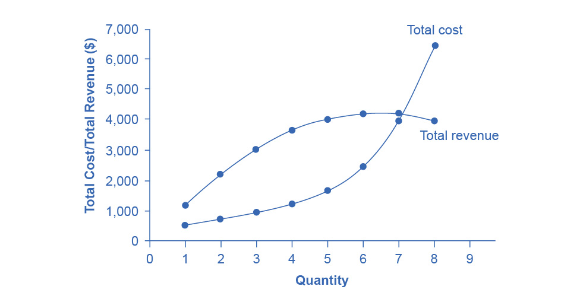
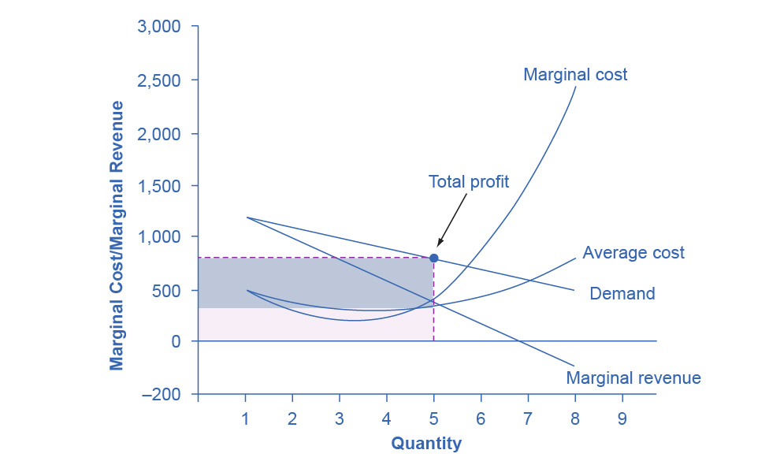
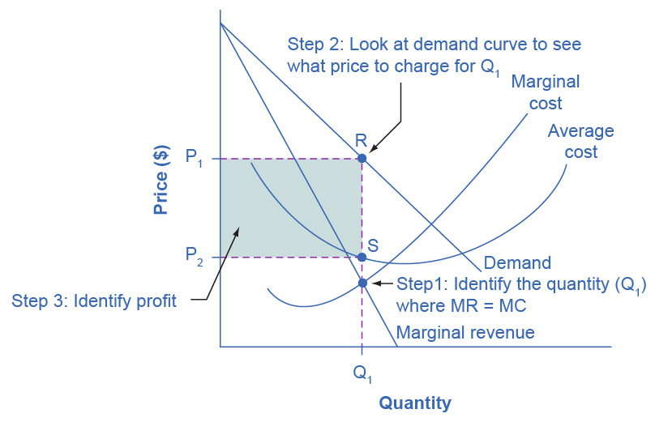
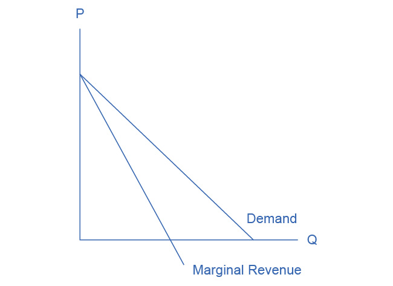

9.2 How a Profit-Maximizing Monopoly Chooses Output and Price
Learning Objectives
By the end of this section, you will be able to:
- Explain the perceived demand curve for a perfect competitor and a monopoly
- Analyze a demand curve for a monopoly and determine the output that maximizes profit and revenue
- Calculate marginal revenue and marginal cost
- Explain allocative efficiency as it pertains to the efficiency of a monopoly
Consider a monopoly firm, comfortably surrounded by barriers to entry so that it need not fear competition from other producers. How will this monopoly choose its profit-maximizing quantity of output, and what price will it charge? Profits for the monopolist, like any firm, will be equal to total revenues minus total costs. We can analyze the pattern of costs for the monopoly within the same framework as the costs of a perfectly competitive firm—that is, by using total cost, fixed cost, variable cost, marginal cost, average cost, and average variable cost. However, because a monopoly faces no competition, its situation and its decision process will differ from that of a perfectly competitive firm. (The Clear It Up feature discusses how hard it is sometimes to define “market” in a monopoly situation.)
Demand Curves Perceived by a Perfectly Competitive Firm and by a Monopoly
A perfectly competitive firm acts as a price taker, so we calculate total revenue taking the given market price and multiplying it by the quantity of output that the firm chooses. The demand curve as it is perceived by a perfectly competitive firm appears in Figure 9.3 (a). The flat perceived demand curve means that, from the viewpoint of the perfectly competitive firm, it could sell either a relatively low quantity like Ql or a relatively high quantity like Qh at the market price P.

Figure 9.3 The Perceived Demand Curve for a Perfect Competitor and a Monopolist (a) A perfectly competitive firm perceives the demand curve that it faces to be flat. The flat shape means that the firm can sell either a low quantity (Ql) or a high quantity (Qh) at exactly the same price (P). (b) A monopolist perceives the demand curve that it faces to be the same as the market demand curve, which for most goods is downward-sloping. Thus, if the monopolist chooses a high level of output (Qh), it can charge only a relatively low price (PI). Conversely, if the monopolist chooses a low level of output (Ql), it can then charge a higher price (Ph). The challenge for the monopolist is to choose the combination of price and quantity that maximizes profits.
Clear It Up
What defines the market?
A monopoly is a firm that sells all or nearly all of the goods and services in a given market. However, what defines the “market”?
In a famous 1947 case, the federal government accused the DuPont company of having a monopoly in the cellophane market, pointing out that DuPont produced 75% of the cellophane in the United States. DuPont countered that even though it had a 75% market share in cellophane, it had less than a 20% share of the “flexible packaging materials,” which includes all other moisture-proof papers, films, and foils. In 1956, after years of legal appeals, the U.S. Supreme Court held that the broader market definition was more appropriate, and it dismissed the case against DuPont.
Questions over how to define the market continue today. True, Microsoft in the 1990s had a dominant share of the software for computer operating systems, but in the total market for all computer software and services, including everything from games to scientific programs, the Microsoft share was only about 14% in 2014. The Greyhound bus company may have a near-monopoly on the market for intercity bus transportation, but it is only a small share of the market for intercity transportation if that market includes private cars, airplanes, and railroad service. DeBeers has a monopoly in diamonds, but it is a much smaller share of the total market for precious gemstones and an even smaller share of the total market for jewelry. A small town in the country may have only one gas station: is this gas station a “monopoly,” or does it compete with gas stations that might be five, 10, or 50 miles away?
In general, if a firm produces a product without close substitutes, then we can consider the firm a monopoly producer in a single market. However, if buyers have a range of similar—even if not identical—options available from other firms, then the firm is not a monopoly. Still, arguments over whether substitutes are close or not close can be controversial.
While a monopolist can charge any price for its product, nonetheless the demand for the firm’s product constrains the price. No monopolist, even one that is thoroughly protected by high barriers to entry, can require consumers to purchase its product. Because the monopolist is the only firm in the market, its demand curve is the same as the market demand curve, which is, unlike that for a perfectly competitive firm, downward-sloping.
Figure 9.3 illustrates this situation. The monopolist can either choose a point like R with a low price (Pl) and high quantity (Qh), or a point like S with a high price (Ph) and a low quantity (Ql), or some intermediate point. Setting the price too high will result in a low quantity sold, and will not bring in much revenue. Conversely, setting the price too low may result in a high quantity sold, but because of the low price, it will not bring in much revenue either. The challenge for the monopolist is to strike a profit-maximizing balance between the price it charges and the quantity that it sells. However, why isn’t the perfectly competitive firm’s demand curve also the market demand curve? See the following Clear It Up feature for the answer to this question.
Clear It Up
What is the difference between perceived demand and market demand?
The demand curve as perceived by a perfectly competitive firm is not the overall market demand curve for that product. However, the firm’s demand curve as perceived by a monopoly is the same as the market demand curve. The reason for the difference is that each perfectly competitive firm perceives the demand for its products in a market that includes many other firms. In effect, the demand curve perceived by a perfectly competitive firm is a tiny slice of the entire market demand curve. In contrast, a monopoly perceives demand for its product in a market where the monopoly is the only producer.
Total Cost and Total Revenue for a Monopolist
We can illustrate profits for a monopolist with a graph of total revenues and total costs, with the example of the hypothetical HealthPill firm in Figure 9.4. The total cost curve has its typical shape that we learned about in Production, Costs and Industry Structure, and that we used in Perfect Competition; that is, total costs rise and the curve grows steeper as output increases, as the final column of Table 9.2 shows.

Figure 9.4 Total Revenue and Total Cost for the HealthPill Monopoly Total revenue for the monopoly firm called HealthPill first rises, then falls. Low levels of output bring in relatively little total revenue, because the quantity is low. High levels of output bring in relatively less revenue, because the high quantity pushes down the market price. The total cost curve is upward-sloping. Profits will be highest at the quantity of output where total revenue is most above total cost. The profit-maximizing level of output is not the same as the revenue-maximizing level of output, which should make sense, because profits take costs into account and revenues do not.
| Quantity Q |
Price P |
Total Revenue TR |
Total Cost TC |
|---|---|---|---|
| 1 | 1,200 | 1,200 | 500 |
| 2 | 1,100 | 2,200 | 750 |
| 3 | 1,000 | 3,000 | 1,000 |
| 4 | 900 | 3,600 | 1,250 |
| 5 | 800 | 4,000 | 1,650 |
| 6 | 700 | 4,200 | 2,500 |
| 7 | 600 | 4,200 | 4,000 |
| 8 | 500 | 4,000 | 6,400 |
Table 9.2 Total Costs and Total Revenues of HealthPill
Total revenue, though, is different. Since a monopolist faces a downward sloping demand curve, the only way it can sell more output is by reducing its price. Selling more output raises revenue, but lowering price reduces it. Thus, the shape of total revenue isn’t clear. Let’s explore this using the data in Table 9.2, which shows quantities along the demand curve and the price at each quantity demanded, and then calculates total revenue by multiplying price times quantity at each level of output. (In this example, we give the output as 1, 2, 3, 4, and so on, for the sake of simplicity. If you prefer a dash of greater realism, you can imagine that the pharmaceutical company measures these output levels and the corresponding prices per 1,000 or 10,000 pills.) As the figure illustrates, total revenue for a monopolist has the shape of a hill, first rising, next flattening out, and then falling. In this example, total revenue is highest at a quantity of 6 or 7.
However, the monopolist is not seeking to maximize revenue, but instead to earn the highest possible profit. In the HealthPill example in Figure 9.4, the highest profit will occur at the quantity where total revenue is the farthest above total cost. This looks to be somewhere in the middle of the graph, but where exactly? It is easier to see the profit maximizing level of output by using the marginal approach, to which we turn next.
Marginal Revenue and Marginal Cost for a Monopolist
In the real world, a monopolist often does not have enough information to analyze its entire total revenues or total costs curves. After all, the firm does not know exactly what would happen if it were to alter production dramatically. However, a monopolist often has fairly reliable information about how changing output by small or moderate amounts will affect its marginal revenues and marginal costs, because it has had experience with such changes over time and because modest changes are easier to extrapolate from current experience. A monopolist can use information on marginal revenue and marginal cost to seek out the profit-maximizing combination of quantity and price.
Table 9.3 expands Table 9.2 using the figures on total costs and total revenues from the HealthPill example to calculate marginal revenue and marginal cost. This monopoly faces typical upward-sloping marginal cost and downward-sloping marginal revenue curves, as Figure 9.5 shows.
Notice that marginal revenue is zero at a quantity of 7, and turns negative at quantities higher than 7. It may seem counterintuitive that marginal revenue could ever be zero or negative: after all, doesn't an increase in quantity sold not always mean more revenue? For a perfect competitor, each additional unit sold brought a positive marginal revenue, because marginal revenue was equal to the given market price. However, a monopolist can sell a larger quantity and see a decline in total revenue. When a monopolist increases sales by one unit, it gains some marginal revenue from selling that extra unit, but also loses some marginal revenue because it must now sell every other unit at a lower price. As the quantity sold becomes higher, at some point the drop in price is proportionally more than the increase in greater quantity of sales, causing a situation where more sales bring in less revenue. In other words, marginal revenue is negative.

Figure 9.5 Marginal Revenue and Marginal Cost for the HealthPill Monopoly For a monopoly like HealthPill, marginal revenue decreases as it sells additional units of output. The marginal cost curve is upward-sloping. The profit-maximizing choice for the monopoly will be to produce at the quantity where marginal revenue is equal to marginal cost: that is, MR = MC. If the monopoly produces a lower quantity, then MR > MC at those levels of output, and the firm can make higher profits by expanding output. If the firm produces at a greater quantity, then MC > MR, and the firm can make higher profits by reducing its quantity of output.
| Quantity Q |
Total Revenue TR |
Marginal Revenue MR |
Total Cost TC |
Marginal Cost MC |
|---|---|---|---|---|
| 1 | 1,200 | 1,200 | 500 | 500 |
| 2 | 2,200 | 1,000 | 775 | 275 |
| 3 | 3,000 | 800 | 1,000 | 225 |
| 4 | 3,600 | 600 | 1,250 | 250 |
| 5 | 4,000 | 400 | 1,650 | 400 |
| 6 | 4,200 | 200 | 2,500 | 850 |
| 7 | 4,200 | 0 | 4,000 | 1,500 |
| 8 | 4,000 | –200 | 6,400 | 2,400 |
Table 9.3 Costs and Revenues of HealthPill
A monopolist can determine its profit-maximizing price and quantity by analyzing the marginal revenue and marginal costs of producing an extra unit. If the marginal revenue exceeds the marginal cost, then the firm should produce the extra unit.
For example, at an output of 4 in Figure 9.5, marginal revenue is 600 and marginal cost is 250, so producing this unit will clearly add to overall profits. At an output of 5, marginal revenue is 400 and marginal cost is 400, so producing this unit still means overall profits are unchanged. However, expanding output from 5 to 6 would involve a marginal revenue of 200 and a marginal cost of 850, so that sixth unit would actually reduce profits. Thus, the monopoly can tell from the marginal revenue and marginal cost that of the choices in the table, the profit-maximizing level of output is 5.
The monopoly could seek out the profit-maximizing level of output by increasing quantity by a small amount, calculating marginal revenue and marginal cost, and then either increasing output as long as marginal revenue exceeds marginal cost or reducing output if marginal cost exceeds marginal revenue. This process works without any need to calculate total revenue and total cost. Thus, a profit-maximizing monopoly should follow the rule of producing up to the quantity where marginal revenue is equal to marginal cost—that is, MR = MC. This quantity is easy to identify graphically, where MR and MC intersect.
Work It Out
Maximizing Profits
If you find it counterintuitive that producing where marginal revenue equals marginal cost will maximize profits, working through the numbers will help.
Step 1. Remember, we define marginal cost as the change in total cost from producing a small amount of additional output.
\(\text{MC} = \frac{\text{change~in~total~cost}}{\text{change~in~quantity~produced}}\)
Step 2. Note that in Table 9.3, as output increases from 1 to 2 units, total cost increases from $500 to $775. As a result, the marginal cost of the second unit will be:

Step 3. Remember that, similarly, marginal revenue is the change in total revenue from selling a small amount of additional output.

Step 4. Note that in Table 9.3, as output increases from 1 to 2 units, total revenue increases from $1200 to $2200. As a result, the marginal revenue of the second unit will be:

| Quantity Q |
Marginal Revenue MR |
Marginal Cost MC |
Marginal Profit MP |
Total Profit P |
|---|---|---|---|---|
| 1 | 1,200 | 500 | 700 | 700 |
| 2 | 1,000 | 275 | 725 | 1,425 |
| 3 | 800 | 225 | 575 | 2,000 |
| 4 | 600 | 250 | 350 | 2,350 |
| 5 | 400 | 400 | 0 | 2,350 |
| 6 | 200 | 850 | −650 | 1,700 |
| 7 | 0 | 1,500 | −1,500 | 200 |
| 8 | −200 | 2,400 | −2,600 | −2,400 |
Table 9.4 Marginal Revenue, Marginal Cost, Marginal and Total Profit
Table 9.4 repeats the marginal cost and marginal revenue data from Table 9.3, and adds two more columns: Marginal profit is the profitability of each additional unit sold. We define it as marginal revenue minus marginal cost. Finally, total profit is the sum of marginal profits. As long as marginal profit is positive, producing more output will increase total profits. When marginal profit turns negative, producing more output will decrease total profits. Total profit is maximized where marginal revenue equals marginal cost. In this example, maximum profit occurs at 5 units of output.
A perfectly competitive firm will also find its profit-maximizing level of output where MR = MC. The key difference with a perfectly competitive firm is that in the case of perfect competition, marginal revenue is equal to price (MR = P), while for a monopolist, marginal revenue is not equal to the price, because changes in quantity of output affect the price.
Illustrating Monopoly Profits
It is straightforward to calculate profits of given numbers for total revenue and total cost. However, the size of monopoly profits can also be illustrated graphically with Figure 9.6, which takes the marginal cost and marginal revenue curves from the previous exhibit and adds an average cost curve and the monopolist’s perceived demand curve. Table 9.5 shows the data for these curves.
| Quantity Q |
Demand P |
Marginal Revenue MR |
Marginal Cost MC |
Average Cost AC |
|---|---|---|---|---|
| 1 | 1,200 | 1,200 | 500 | 500 |
| 2 | 1,100 | 1,000 | 275 | 388 |
| 3 | 1,000 | 800 | 225 | 333 |
| 4 | 900 | 600 | 250 | 313 |
| 5 | 800 | 400 | 400 | 330 |
| 6 | 700 | 200 | 850 | 417 |
| 7 | 600 | 0 | 1,500 | 571 |
| 8 | 500 | –200 | 2,400 | 800 |
Table 9.5

Figure 9.6 Illustrating Profits at the HealthPill Monopoly This figure begins with the same marginal revenue and marginal cost curves from the HealthPill monopoly from Figure 9.5. It then adds an average cost curve and the demand curve that the monopolist faces. The HealthPill firm first chooses the quantity where MR = MC. In this example, the quantity is 5. The monopolist then decides what price to charge by looking at the demand curve it faces. The large box, with quantity on the horizontal axis and demand (which shows the price) on the vertical axis, shows total revenue for the firm. The lighter-shaded box, which is quantity on the horizontal axis and average cost of production on the vertical axis shows the firm's total costs. The large total revenue box minus the smaller total cost box leaves the darkly shaded box that shows total profits. Since the price charged is above average cost, the firm is earning positive profits.
Figure 9.7 illustrates the three-step process where a monopolist: selects the profit-maximizing quantity to produce; decides what price to charge; determines total revenue, total cost, and profit.
Step 1: The Monopolist Determines Its Profit-Maximizing Level of Output
The firm can use the points on the demand curve D to calculate total revenue, and then, based on total revenue, calculate its marginal revenue curve. The profit-maximizing quantity will occur where MR = MC—or at the last possible point before marginal costs start exceeding marginal revenue. On Figure 9.6, MR = MC occurs at an output of 5.
Step 2: The Monopolist Decides What Price to Charge
The monopolist will charge what the market is willing to pay. A dotted line drawn straight up from the profit-maximizing quantity to the demand curve shows the profit-maximizing price which, in Figure 9.6, is $800. This price is above the average cost curve, which shows that the firm is earning profits.
Step 3: Calculate Total Revenue, Total Cost, and Profit
Total revenue is the overall shaded box, where the width of the box is the quantity sold and the height is the price. In Figure 9.6, this is 5 x $800 = $4000. In Figure 9.6, the bottom part of the shaded box, which is shaded more lightly, shows total costs; that is, quantity on the horizontal axis multiplied by average cost on the vertical axis or 5 x $330 = $1650. The larger box of total revenues minus the smaller box of total costs will equal profits, which the darkly shaded box shows. Using the numbers gives $4000 - $1650 = $2350. In a perfectly competitive market, the forces of entry would erode this profit in the long run. However, a monopolist is protected by barriers to entry. In fact, one obvious sign of a possible monopoly is when a firm earns profits year after year, while doing more or less the same thing, without ever seeing increased competition eroding those profits.

Figure 9.7 How a Profit-Maximizing Monopoly Decides Price In Step 1, the monopoly chooses the profit-maximizing level of output Q1, by choosing the quantity where MR = MC. In Step 2, the monopoly decides how much to charge for output level Q1 by drawing a line straight up from Q1 to point R on its perceived demand curve. Thus, the monopoly will charge a price (P1). In Step 3, the monopoly identifies its profit. Total revenue will be Q1 multiplied by P1. Total cost will be Q1 multiplied by the average cost of producing Q1, which point S shows on the average cost curve to be P2. Profits will be the total revenue rectangle minus the total cost rectangle, which the shaded zone in the figure shows.
Clear It Up
Why is a monopolist’s marginal revenue always less than the price?
The marginal revenue curve for a monopolist always lies beneath the market demand curve. To understand why, think about increasing the quantity along the demand curve by one unit, so that you take one step down the demand curve to a slightly higher quantity but a slightly lower price. A demand curve is not sequential: It is not that first we sell Q1 at a higher price, and then we sell Q2 at a lower price. Rather, a demand curve is conditional: If we charge the higher price, we would sell Q1. If, instead, we charge a lower price (on all the units that we sell), we would sell Q2.
When we think about increasing the quantity sold by one unit, marginal revenue is affected in two ways. First, we sell one additional unit at the new market price. Second, all the previous units, which we sold at the higher price, now sell for less. Because of the lower price on all units sold, the marginal revenue of selling a unit is less than the price of that unit—and the marginal revenue curve is below the demand curve. Tip: For a straight-line demand curve, MR and demand have the same vertical intercept. As output increases, marginal revenue decreases twice as fast as demand, so that the horizontal intercept of MR is halfway to the horizontal intercept of demand. You can see this in the Figure 9.8.

Figure 9.8 The Monopolist’s Marginal Revenue Curve versus Demand Curve Because the market demand curve is conditional, the marginal revenue curve for a monopolist lies beneath the demand curve.
The Inefficiency of Monopoly
Most people criticize monopolies because they charge too high a price, but what economists object to is that monopolies do not supply enough output to be allocatively efficient. To understand why a monopoly is inefficient, it is useful to compare it with the benchmark model of perfect competition.
Allocative efficiency is an economic concept regarding efficiency at the social or societal level. It refers to producing the optimal quantity of some output, the quantity where the marginal benefit to society of one more unit just equals the marginal cost. The rule of profit maximization in a world of perfect competition was for each firm to produce the quantity of output where P = MC, where the price (P) is a measure of how much buyers value the good and the marginal cost (MC) is a measure of what marginal units cost society to produce. Following this rule assures allocative efficiency. If P > MC, then the marginal benefit to society (as measured by P) is greater than the marginal cost to society of producing additional units, and a greater quantity should be produced. However, in the case of monopoly, price is always greater than marginal cost at the profit-maximizing level of output, as you can see by looking back at Figure 9.6. Thus, consumers do not benefit from a monopoly because it will sell a lower quantity in the market, at a higher price, than would have been the case in a perfectly competitive market.
The problem of inefficiency for monopolies often runs even deeper than these issues, and also involves incentives for efficiency over longer periods of time. There are counterbalancing incentives here. On one side, firms may strive for new inventions and new intellectual property because they want to become monopolies and earn high profits—at least for a few years until the competition catches up. In this way, monopolies may come to exist because of competitive pressures on firms. However, once a barrier to entry is in place, a monopoly that does not need to fear competition can just produce the same old products in the same old way—while still ringing up a healthy rate of profit. John Hicks, who won the Nobel Prize for economics in 1972, wrote in 1935: “The best of all monopoly profits is a quiet life.” He did not mean the comment in a complimentary way. He meant that monopolies may bank their profits and slack off on trying to please their customers.
When AT&T provided all of the local and long-distance phone service in the United States, along with manufacturing most of the phone equipment, the payment plans and types of phones did not change much. The old joke was that you could have any color phone you wanted, as long as it was black. However, in 1982, government litigation split up AT&T into a number of local phone companies, a long-distance phone company, and a phone equipment manufacturer. An explosion of innovation followed. Services like call waiting, caller ID, three-way calling, voice mail through the phone company, mobile phones, and wireless connections to the internet all became available. Companies offered a wide range of payment plans, as well. It was no longer true that all phones were black. Instead, phones came in a wide variety of shapes and colors. The end of the telephone monopoly brought lower prices, a greater quantity of services, and also a wave of innovation aimed at attracting and pleasing customers.
Bring It Home
The Rest is History
In the opening case, we presented the East India Company and the Confederate States as a monopoly or near monopoly provider of a good. Nearly every American schoolchild knows the result of the “unwelcome visit” the “Mohawks” bestowed upon Boston Harbor’s tea-bearing ships—the Boston Tea Party. Regarding the cotton industry, we also know Great Britain remained neutral during the Civil War, taking neither side during the conflict.
Did the monopoly nature of these business have unintended and historical consequences? Might the American Revolution have been deterred, if the East India Company had sailed the tea-bearing ships back to England? Might the southern states have made different decisions had they not been so confident “King Cotton” would force diplomatic recognition of the Confederate States of America? Of course, it is not possible to definitively answer these questions. We cannot roll back the clock and try a different scenario. We can, however, consider the monopoly nature of these businesses and the roles they played and hypothesize about what might have occurred under different circumstances.
Perhaps if there had been legal free tea trade, the colonists would have seen things differently. There was smuggled Dutch tea in the colonial market. If the colonists had been able to freely purchase Dutch tea, they would have paid lower prices and avoided the tax.
What about the cotton monopoly? With one in five jobs in Great Britain depending on Southern cotton and the Confederate States as nearly the sole provider of that cotton, why did Great Britain remain neutral during the Civil War? At the beginning of the war, Britain simply drew down massive stores of cotton. These stockpiles lasted until near the end of 1862. Why did Britain not recognize the Confederacy at that point? Two reasons: The Emancipation Proclamation and new sources of cotton. Having outlawed slavery throughout the United Kingdom in 1833, it was politically impossible for Great Britain, empty cotton warehouses or not, to recognize, diplomatically, the Confederate States. In addition, during the two years it took to draw down the stockpiles, Britain expanded cotton imports from India, Egypt, and Brazil.
Monopoly sellers often see no threats to their superior marketplace position. In these examples did the power of the monopoly hide other possibilities from the decision makers? Perhaps. As a result of their actions, this is how history unfolded.